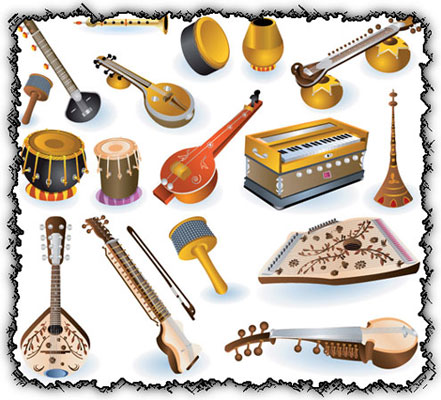

Guide to the world of music.
Music of India
The music of India includes multiple varieties of Indian classical music, folk music, filmi and Indian pop. India's classical music tradition, including Hindustani music and Carnatic, has a history spanning millennia and developed over several eras. Music in India began as an integral part of socio-religious life.